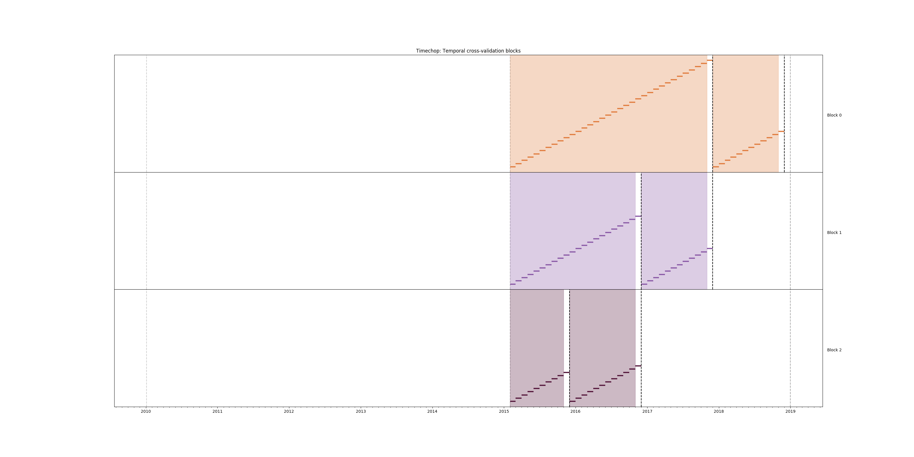

Resource prioritization
Resource prioritization
Problem description
We will begin with the inspection prioritization problem. We want to generate a list of facilities that will have a critical or serious food violation if inspected.
The scenario is the following: you work for the City of Chicago and you have limited food inspectors, so you try to prioritize them to focus on the highest-risk facilities. So you will use the data to answer the next question:
Which X facilities are most likely to fail a food inspection in the following Y period of time?
A more technical way of writing the question is: What is the probability distribution of facilities that are at risk of fail a food inspection if they are inspected in the following period of time?1
If you want to focus on major violations only, you can do that too:
Which X facilities are most likely to have a critical or serious violation in the following Y period of time?
This situation is very common in governmental agencies that provide social services: they need to prioritize their resources and use them in the facilities that are most likely to have problems
We will use Machine Learning to accomplish this. This means that we will use historical data to train our models, and we will use temporal cross validation to test the performance of them.
For the resource prioritization problems there are commonly two problems with the data: (a) bias and (b) incompleteness.
First, note that our data have bias: We only have data on facilities that were inspected. That means that our data set contains information about the probability of have a violation (V) given that the facility was inspected (I), P(V|I). But the probability that we try to find is P(V).
A different problem that our data set could have is if our dataset contains all the facilities in Chicago, i.e. if our entities table represents the Universe of facilities. There are almost 40,000 entities in our database. We could make the case that every facility in Chicago is in the database, since every facility that opens will be subject to an inspection. We will assume that all the facilities are in our data.
Creating the labels
We will define two labels:
- Which facilities are likely to fail an inspection?
The label takes a 1 if the inspection had at least one result = 'fail' and a 0 otherwise.
- Which facilities fail an inspection with a major violation?
Critical violations are coded between 1-14, serious violations between 15-29, everything above 30 is assumed to be a minor violation. The label takes a 1 if the inspection had at least one result = 'fail' and a violation between 1 and 29, and a 0 otherwise.
We can extract the severity of the violation using the following code:
select
event_id,
entity_id,
date,
result,
array_agg(distinct obj ->>'severity') as violations_severity,
(result = 'fail') as failed,
coalesce(
(result = 'fail' and
('serious' = ANY(array_agg(obj ->> 'severity')) or 'critical' = ANY(array_agg(obj ->> 'severity')))
), false
) as failed_major_violation
from
(
select
event_id,
entity_id,
date,
result,
jsonb_array_elements(violations::jsonb) as obj
from
semantic.events
limit 20
) as t1
group by
entity_id, event_id, date, result
order by
date desc;
| eventid | entityid | date | result | violationsseverity | failed | failedmajorviolation |
|---|---|---|---|---|---|---|
| 1770568 | 30841 | 2016-05-11 | pass | {minor} | f | f |
| 1763967 | 30841 | 2016-05-03 | fail | {critical,minor,serious} | t | t |
| 1434534 | 21337 | 2014-04-03 | pass | {NULL} | f | f |
| 1343315 | 22053 | 2013-06-06 | fail | {minor,serious} | t | t |
| 1235707 | 21337 | 2013-03-27 | pass | {NULL} | f | f |
| 537439 | 13458 | 2011-06-10 | fail | {NULL} | t | f |
| 569377 | 5570 | 2011-06-01 | pass | {NULL} | f | f |
The outcome will be used by triage to generate the labels. The following image tries to show the meaning of the outcomes for the inspection failed problem definition.
. Each dot represents an inspection. Color is the *outcome* of the inspection. Green means the facility passed the inspection, and red means it failed. Each facility in the image had two inspections, but only the facility in the middle passed both.")
Modeling Using Machine Learning
It is time to put these steps together. All the coding is complete (triage dev team did that for us); we just need to modify the triage experiment’s configuration file.
Defining a baseline
As a first step, lets do an experiment that defines our baseline. The rationale of this is that the knowing the baseline will allow us to verify if our Machine Learning model is better than the baseline2. It is also very fast to train ( DummyClassifier is not computationally expensive, so it will help us to verify that the experiment configuration is correct without waiting for a long time).
We need to write the experiment config file for that. Let's break it down and explain the sections.
The config file for this first experiment is located in triage/experiments/inspectionsbaseline.yaml.
The first lines of the experiment config file specify the config-file version (v6 at the moment of writing this tutorial), a comment (model_comment, which will end up as a value in the model_metadata.models table), and a list of user-defined metadata (user_metadata) that can help to identify the resulting model groups. For this example, if you run experiments that share a temporal configuration but that use different label definitions (say, labeling inspections with any violation as positive versus only labeling inspections with major violations as positive), you can use the user metadata keys to indicate that the matrices from these experiments have different labeling criteria. The matrices from the two experiments will have different filenames (and should not be overwritten or incorrectly used), and if you add the label_definition key to the model_group_keys, models made on different label definitions will belong to different model groups.
config_version: 'v6'
model_comment: 'inspections: baseline'
user_metadata:
label_definition: 'failed'
experiment_type: 'inspections prioritization'
description: |
Baseline calculation
purpose: 'baseline'
org: 'DSaPP'
team: 'Tutorial'
author: 'Your name here'
etl_date: '2019-02-21'
model_group_keys:
- 'class_path'
- 'parameters'
- 'feature_names'
- 'feature_groups'
- 'cohort_name'
- 'state'
- 'label_name'
- 'label_timespan'
- 'training_as_of_date_frequency'
- 'max_training_history'
- 'label_definition'
- 'experiment_type'
- 'org'
- 'team'
- 'author'
- 'purpose'
- 'etl_date'
(Obviously, change 'Your name here' for your name)
Next comes the temporal configuration section. The first four parameters are related to the availability of data: How much data you have for feature creation? How much data you have for label generation? For simplicity we will assume that we can use the full semantic.events time span for both.
select min(date), max(date) from semantic.events
| min | max |
|---|---|
| 2010-01-04 | 2019-02-20 |
The next parameters are related to the training intervals:
- How frequently to retrain models? (
model_update_frequency) - How many rows per entity in the train matrices? (
training_as_of_date_frequencies) - How much time is covered by labels in the training matrices? (
training_label_timespans)
The remaining elements are related to the testing matrices. For inspections, you can choose them as follows:
test_as_of_date_frequenciesis planning/scheduling frequencytest_durationshow far ahead do you schedule inspections?test_label_timespanis equal totest_durations
Let's assume that we need to do rounds of inspections every month (test_as_of_date_frequencies = 1month) and we need to complete that round in exactly one month (test_durations = test_label_timespan = 1month).
We will assume that the data is more or less stable3, at least for one year, so model_update_frequency = 1 year.
temporal_config:
feature_start_time: '2010-01-04'
feature_end_time: '2019-01-01'
label_start_time: '2015-02-01'
label_end_time: '2019-01-01'
model_update_frequency: '1y'
training_label_timespans: ['1month']
training_as_of_date_frequencies: '1month'
test_durations: '1y'
test_label_timespans: ['1month']
test_as_of_date_frequencies: '1month'
max_training_histories: '5y'
We can visualize the splitting using the function show-timechop introduced in Introduction to triage
# Remember to run this in bastion NOT in your laptop shell!
triage experiment experiments/inspections_baseline.yaml --show-timechop

We need to specify our labels. For this first experiment we will use the label failed, using the same query from the simple_skeleton_experiment.yaml
label_config:
query: |
select
entity_id,
bool_or(result = 'fail')::integer as outcome
from semantic.events
where '{as_of_date}'::timestamp <= date
and date < '{as_of_date}'::timestamp + interval '{label_timespan}'
group by entity_id
name: 'failed_inspections'
It should be obvious, but let's state it anyway: We are only training in facilities that were inspected, but we will test our model in all the facilities in our cohort4. So, in the train matrices we will have only 0 and 1 as possible labels, but in the test matrices we will found 0, 1 and NULL.
In the section regarding to Early Warning Systems we will learn how to incorporate all the facilities of the cohort in the train matrices.
We just want to include active facilities5 in our matrices, so we tell triage to take that in account:
cohort_config:
query: |
with buckets as (
select *, ntile(5) over (order by number_of_inspections asc) as bucket
from (
select entity_id, count(*) as number_of_inspections
from semantic.events
group by entity_id
) as t
)
select e.entity_id
from semantic.entities as e
inner join
buckets as b
using (entity_id)
where
daterange(start_time, end_time, '[]') @> '{as_of_date}'::date
and bucket in (5)
name: 'active_facilities'
Triage will generate the features for us, but we need to tell it which features we want in the section feature_aggregations. Here, each entry describes a collate.SpacetimeAggregation object and the arguments needed to create it. For this experiment, we will use only one feature (number of inspections). DummyClassifier don't use any feature to do the "prediction", so we won't expend compute cycles doing the feature/matrix creation:
feature_aggregations:
-
prefix: 'inspections'
from_obj: 'semantic.events'
knowledge_date_column: 'date'
aggregates_imputation:
count:
type: 'zero_noflag'
aggregates:
-
quantity:
total: "*"
metrics:
- 'count'
intervals: ['all']
groups:
- 'entity_id'
feature_group_definition:
prefix:
- 'inspections'
feature_group_strategies: ['all']
If we observe the image generated from the temporal_config section, each particular date is the beginning of the rectangles that describes the rows in the matrix. In that date (as_of_date in timechop parlance) we will calculate both features, and we will repeat that for every other rectangle in that image.
Now, let's discuss how we will specify the models to try (remember that the model is specified by the algorithm, the hyperparameters, and the subset of features to use). In triage you need to specify in the grid_config section a list of machine learning algorithms that you want to train and a list of hyperparameters. You can use any algorithm that you want; the only requirement is that it respects the sklearn API.
grid_config:
'sklearn.dummy.DummyClassifier':
strategy: [prior,uniform, most_frequent]
Finally, we should define wich metrics we care about for evaluating our model. Here we will concentrate only in precision and recall at an specific value k 6.
In this setting k represents the resource’s constraint: It is the number of inspections that the city could do in a month given all the inspectors available.
scoring:
testing_metric_groups:
-
metrics: [precision@, recall@]
thresholds:
percentiles: [1.0, 2.0, 3.0, 4.0, 5.0, 10, 15, 20, 25, 30, 35, 40, 45, 50, 55, 60, 65, 70, 75, 80, 85, 90, 95, 100]
top_n: [1, 5, 10, 25, 50, 100, 250, 500, 1000]
training_metric_groups:
-
metrics: [accuracy]
-
metrics: [precision@, recall@]
thresholds:
percentiles: [1.0, 2.0, 3.0, 4.0, 5.0, 10, 15, 20, 25, 30, 35, 40, 45, 50, 55, 60, 65, 70, 75, 80, 85, 90, 95, 100]
top_n: [1, 5, 10, 25, 50, 100, 250, 500, 1000]
You should be warned that precision and recall at k in this setting is kind of ill-defined (because you will end with a lot of NULL labels, remember, only a few of facilities are inspected in each period)7.
We will want a list of facilities to be inspected. The length of our list is constrained by our inspection resources, i.e. the answer to the question How many facilities can I inspect in a month? In this experiment we are assuming that the maximum capacity is 10% but we are evaluating for a larger space of possibilities (see top_n, percentiles above).
The execution of the experiments can take a long time, so it is a good practice to validate the configuration file before running the model. You don't want to wait for hours (or days) and then discover that something went wrong.
# Remember to run this in bastion NOT in your laptop shell!
triage experiment experiments/inspections_baseline.yaml --validate-only
If everything was ok, you should see an Experiment validation ran to completion with no errors.
You can execute the experiment as8
# Remember to run this in bastion NOT in your laptop shell!
triage experiment experiments/inspections_baseline.yaml --profile
This will print a lot of output, and if everything is correct it will create 6 matrices (3 for training, 3 for testing) in triage/matrices and every matrix will be represented by two files, one with the metadata of the matrix (a yaml file) and one with the actual matrix (the csv.gz file).
# We will use some bash magic
ls matrices | awk -F . '{print $NF}' | sort | uniq -c
Triage also will store 9 trained models in triage/trained_models:
ls trained_models | wc -l
And it will populate the results schema in the database. As mentioned, we will get 3 model groups:
select
model_group_id,
model_type,
hyperparameters
from
model_metadata.model_groups;
| modelgroupid | modeltype | hyperparameters |
|---|---|---|
| 1 | sklearn.dummy.DummyClassifier | {"strategy": "prior"} |
| 2 | sklearn.dummy.DummyClassifier | {"strategy": "uniform"} |
| 3 | sklearn.dummy.DummyClassifier | {"strategy": "mostfrequent"} |
And 9 models:
select
model_group_id,
array_agg(model_id) as models,
array_agg(train_end_time) as train_end_times
from
model_metadata.models
group by
model_group_id
order by
model_group_id
| modelgroupid | models | trainendtimes |
|---|---|---|
| 1 | {1,4,7} | {"2015-12-01 00:00:00","2016-12-01 00:00:00","2017-12-01 00:00:00"} |
| 2 | {2,5,8} | {"2015-12-01 00:00:00","2016-12-01 00:00:00","2017-12-01 00:00:00"} |
| 3 | {3,6,9} | {"2015-12-01 00:00:00","2016-12-01 00:00:00","2017-12-01 00:00:00"} |
From that last query, you should note that the order in which triage trains the models is from oldest to newest train_end_time and model_group , also in ascending order. It will not go to the next block until all the models groups are trained.
You can check with which matrix the models are trained:
select
model_group_id,
model_id, train_end_time,
substring(model_hash,1,5) as model_hash,
substring(train_matrix_uuid,1,5) as train_matrix_uuid,
ma.num_observations as observations,
ma.lookback_duration as feature_lookback_duration, ma.feature_start_time
from
model_metadata.models as mo
join
model_metadata.matrices as ma
on train_matrix_uuid = matrix_uuid
order by
model_group_id,
train_end_time asc;
| modelgroupid | modelid | trainendtime | modelhash | trainmatrixuuid | observations | featurelookbackduration | featurestarttime |
|---|---|---|---|---|---|---|---|
| 1 | 1 | 2015-12-01 00:00:00 | ff2f3 | a4455 | 6715 | @ 5 years | 2010-01-04 00:00:00 |
| 1 | 4 | 2016-12-01 00:00:00 | faf2f | bf455 | 15104 | @ 5 years | 2010-01-04 00:00:00 |
| 1 | 7 | 2017-12-01 00:00:00 | faf19 | b0237 | 22860 | @ 5 years | 2010-01-04 00:00:00 |
| 2 | 2 | 2015-12-01 00:00:00 | 1435f | a4455 | 6715 | @ 5 years | 2010-01-04 00:00:00 |
| 2 | 5 | 2016-12-01 00:00:00 | 3ad95 | bf455 | 15104 | @ 5 years | 2010-01-04 00:00:00 |
| 2 | 8 | 2017-12-01 00:00:00 | cc595 | b0237 | 22860 | @ 5 years | 2010-01-04 00:00:00 |
| 3 | 3 | 2015-12-01 00:00:00 | cdf77 | a4455 | 6715 | @ 5 years | 2010-01-04 00:00:00 |
| 3 | 6 | 2016-12-01 00:00:00 | 83ed9 | bf455 | 15104 | @ 5 years | 2010-01-04 00:00:00 |
| 3 | 9 | 2017-12-01 00:00:00 | 67a54 | b0237 | 22860 | @ 5 years | 2010-01-04 00:00:00 |
As expected, we have three models per model group. Each model was trained with the matrix indicated in the column train_matrix_uuid. This uuid is the file name of the stored matrix. The model itself was stored under the file named with the model_hash.
If you want to see in which matrix the model was tested you need to run the following query
select distinct
model_id,
model_group_id, train_end_time,
substring(model_hash,1,5) as model_hash,
substring(ev.matrix_uuid,1,5) as test_matrix_uuid,
ma.num_observations as observations,
ma.lookback_duration as feature_lookback_duration, ma.feature_start_time
from
model_metadata.models as mo
join
test_results.evaluations as ev using (model_id)
join
model_metadata.matrices as ma on ev.matrix_uuid = ma.matrix_uuid
order by
model_group_id, train_end_time asc;
| modelid | modelgroupid | trainendtime | modelhash | testmatrixuuid | observations | featurelookbackduration | featurestarttime |
|---|---|---|---|---|---|---|---|
| 1 | 1 | 2015-12-01 00:00:00 | ff2f3 | 865e3 | 69472 | @ 1 year | 2010-01-04 00:00:00 |
| 4 | 1 | 2016-12-01 00:00:00 | faf2f | 3f3e1 | 66275 | @ 1 year | 2010-01-04 00:00:00 |
| 7 | 1 | 2017-12-01 00:00:00 | faf19 | 4203c | 62194 | @ 1 year | 2010-01-04 00:00:00 |
| 2 | 2 | 2015-12-01 00:00:00 | 1435f | 865e3 | 69472 | @ 1 year | 2010-01-04 00:00:00 |
| 5 | 2 | 2016-12-01 00:00:00 | 3ad95 | 3f3e1 | 66275 | @ 1 year | 2010-01-04 00:00:00 |
| 8 | 2 | 2017-12-01 00:00:00 | cc595 | 4203c | 62194 | @ 1 year | 2010-01-04 00:00:00 |
| 3 | 3 | 2015-12-01 00:00:00 | cdf77 | 865e3 | 69472 | @ 1 year | 2010-01-04 00:00:00 |
| 6 | 3 | 2016-12-01 00:00:00 | 83ed9 | 3f3e1 | 66275 | @ 1 year | 2010-01-04 00:00:00 |
| 9 | 3 | 2017-12-01 00:00:00 | 67a54 | 4203c | 62194 | @ 1 year | 2010-01-04 00:00:00 |
All the models were stored in /triage/trained_models/{model_hash} using the standard serialization of sklearn models. Every model was trained with the matrix train_matrix_uuid stored in the directory /triage/matrices.
What's the performance of this model groups?
\set k 0.1
select distinct
model_group_id,
model_id,
ma.feature_start_time::date,
train_end_time::date,
ev.evaluation_start_time::date,
ev.evaluation_end_time::date,
to_char(ma.num_observations, '999,999') as observations,
to_char(ev.num_labeled_examples, '999,999') as "total labeled examples",
to_char(ev.num_positive_labels, '999,999') as "total positive labels",
to_char(ev.num_positive_labels*1.0 / ev.num_labeled_examples, '0.999') as baserate,
:k * 100 as "k%",
to_char(ev.num_labeled_above_threshold, '999,999') as "labeled examples @ 10%",
to_char(:k * ma.num_observations, '999,999') as "predicted positive (PP) @ 10%",
to_char(ev.value * ev.num_labeled_above_threshold, '999,999') as "true positive (TP) @ 10%",
to_char(ev.value, '0.999') as "precision@10%"
from
model_metadata.models as mo
join
test_results.evaluations as ev using (model_id)
join
model_metadata.matrices as ma on ev.matrix_uuid = ma.matrix_uuid
where
ev.metric || ev.parameter = 'precision@10_pct'
order by
model_id, train_end_time asc;
| modelgroupid | modelid | featurestarttime | trainendtime | evaluationstarttime | evaluationendtime | observations | total labeled examples | total positive labels | baserate | k% | labeled examples @ 10% | predicted positive (PP) @ 10% | true positive (TP) @ 10% | precision@10% |
|---|---|---|---|---|---|---|---|---|---|---|---|---|---|---|
| 1 | 1 | 2010-01-04 | 2015-12-01 | 2015-12-01 | 2016-11-01 | 69,472 | 8,389 | 2,326 | 0.277 | 10.0 | 824 | 6,947 | 243 | 0.295 |
| 2 | 2 | 2010-01-04 | 2015-12-01 | 2015-12-01 | 2016-11-01 | 69,472 | 8,389 | 2,326 | 0.277 | 10.0 | 824 | 6,947 | 243 | 0.295 |
| 3 | 3 | 2010-01-04 | 2015-12-01 | 2015-12-01 | 2016-11-01 | 69,472 | 8,389 | 2,326 | 0.277 | 10.0 | 824 | 6,947 | 243 | 0.295 |
| 1 | 4 | 2010-01-04 | 2016-12-01 | 2016-12-01 | 2017-11-01 | 66,275 | 7,756 | 2,077 | 0.268 | 10.0 | 811 | 6,628 | 196 | 0.242 |
| 2 | 5 | 2010-01-04 | 2016-12-01 | 2016-12-01 | 2017-11-01 | 66,275 | 7,756 | 2,077 | 0.268 | 10.0 | 811 | 6,628 | 196 | 0.242 |
| 3 | 6 | 2010-01-04 | 2016-12-01 | 2016-12-01 | 2017-11-01 | 66,275 | 7,756 | 2,077 | 0.268 | 10.0 | 811 | 6,628 | 196 | 0.242 |
| 1 | 7 | 2010-01-04 | 2017-12-01 | 2017-12-01 | 2018-11-01 | 62,194 | 5,619 | 1,462 | 0.260 | 10.0 | 546 | 6,219 | 137 | 0.251 |
| 2 | 8 | 2010-01-04 | 2017-12-01 | 2017-12-01 | 2018-11-01 | 62,194 | 5,619 | 1,462 | 0.260 | 10.0 | 546 | 6,219 | 137 | 0.251 |
| 3 | 9 | 2010-01-04 | 2017-12-01 | 2017-12-01 | 2018-11-01 | 62,194 | 5,619 | 1,462 | 0.260 | 10.0 | 546 | 6,219 | 137 | 0.251 |
The columns num_labeled_examples, num_labeled_above_threshold, num_positive_labels represent the number of selected entities on the prediction date that are labeled, the number of entities with a positive label above the threshold, and the number of entities with positive labels among all the labeled entities respectively.
We added some extra columns: baserate, =predicted positive (PP) and true positive (TP). Baserate represents the proportion of the all the facilities that were inspected that failed the inspection, i.e. P(V|I). The PP and TP are approximate since it were calculated using the value of k. But you could get the exact value of those from the test_results.predictions table.
Note that the baserate should be equal to the precision@100%, if is not there is something wrong …
Creating a simple experiment: ML as a Data Mining technique
We will try one of the simplest machine learning algorithms: a Decision Tree Classifier (DT) as a second experiment. The rationale of this is that the DT is very fast to train (so it will help us to verify that the experiment configuration is correct without waiting for a long time) and it helps you to understand the structure of your data.
The config file for this first experiment is located in <./triage/experiments/inspections_dt.yaml>
Note that we don't modify the temporal_config section neither the feature_aggregations, cohort_config or label_config. Triage is smart enough to use the previous tables and matrices instead of generating them from scratch.
config_version: 'v6'
model_comment: 'inspections: DT'
user_metadata:
label_definition: 'failed'
experiment_type: 'inspections prioritization'
description: |
Decision Tree Classifier
purpose: 'data mining'
org: 'DSaPP'
team: 'Tutorial'
author: 'Your name here'
etl_date: '2019-02-21'
Note that we don't modify the temporal_config section neither the cohort_config or label_config. Triage is smart enough to use the previous tables and matrices instead of generating them from scratch.
For this experiment, we will add the following features:
-
Number of different types of inspections the facility had in the last year (calculated for an as-of date).
-
Number of different types of inspections that happened in the zip code in the last year from a particular day.
-
Number of inspections
-
Number/proportion of inspections by result type
-
Number/proportion of times that a facility was classify with particular risk level
In all of them we will do the aggregation in the last month, 3 months, 6 months, 1 year and historically. Remember that all this refers to events in the past, i.e. How many times the facility was marked with high risk in the previous 3 Months?, What is the proportion of failed inspections in the previous year?
feature_aggregations:
-
prefix: 'inspections'
from_obj: 'semantic.events'
knowledge_date_column: 'date'
aggregates_imputation:
count:
type: 'zero_noflag'
aggregates:
-
quantity:
total: "*"
metrics:
- 'count'
intervals: ['1month', '3month', '6month', '1y', 'all']
groups:
- 'entity_id'
-
prefix: 'risks'
from_obj: 'semantic.events'
knowledge_date_column: 'date'
categoricals_imputation:
sum:
type: 'zero'
avg:
type: 'zero'
categoricals:
-
column: 'risk'
choices: ['low', 'medium', 'high']
metrics:
- 'sum'
- 'avg'
intervals: ['1month', '3month', '6month', '1y', 'all']
groups:
- 'entity_id'
- 'zip_code'
-
prefix: 'results'
from_obj: 'semantic.events'
knowledge_date_column: 'date'
categoricals_imputation:
all:
type: 'zero'
categoricals:
-
column: 'result'
choice_query: 'select distinct result from semantic.events'
metrics:
- 'sum'
- 'avg'
intervals: ['1month', '3month', '6month', '1y', 'all']
groups:
- 'entity_id'
-
prefix: 'inspection_types'
from_obj: 'semantic.events'
knowledge_date_column: 'date'
categoricals_imputation:
sum:
type: 'zero_noflag'
categoricals:
-
column: 'type'
choice_query: 'select distinct type from semantic.events where type is not null'
metrics:
- 'sum'
intervals: ['1month', '3month', '6month', '1y', 'all']
groups:
- 'entity_id'
- 'zip_code'
And as stated, we will train some Decision Trees, in particular we are interested in a shallow tree, and in a full grown tree. Both trees will show you the structure of your data. We also we train a middle size tree.
grid_config:
'sklearn.tree.DecisionTreeClassifier':
max_depth: [2,10,~]
min_samples_split: [2,5]
Some of the parameters in sklearn are None. If you want to try those you need to indicate it with yaml's null or ~ keyword.
Besides the algorithm and the hyperparameters, you should specify which subset of features use. First, in the section feature_group_definition you specify how to group the features (you can use the table name or the prefix from the section feature_aggregation) and then a strategy for choosing the subsets: all (all the subsets at once), leave-one-out (try all the subsets except one, do that for all the combinations), or leave-one-in (just try subset at the time).
feature_group_definition:
prefix:
- 'inspections'
- 'results'
- 'risks'
- 'inspection_types'
feature_group_strategies: ['all']
Finally we will leave the scoring section as before.
In this experiment we will end with 6 model groups (number of algorithms [1] \times number of hyperparameter combinations [2 \times 3 = 5] \times number of feature groups strategies [1]]). Also, we will create 18 models (3 per model group) given that we have 3 temporal blocks (one model per temporal group).
Before running the experiment, remember to validate that the configuration is correct:
# Remember to run this in bastion NOT in your laptop shell!
triage experiment experiments/inspections_dt.yaml --validate-only
and check the temporal cross validation:
# Remember to run this in bastion NOT in your laptop shell!
triage experiment experiments/inspections_dt.yaml --show-timechop

You can execute the experiment like this:
# Remember to run this in bastion NOT in your laptop shell!
triage experiment experiments/inspections_dt.yaml --profile
After the experiment finishes, you will get 6 new model_groups (1 per combination in grid_config)
select
model_group_id,
model_type,
hyperparameters
from
model_metadata.model_groups
where
model_group_id not in (1,2,3);
| modelgroupid | modeltype | hyperparameters |
|---|---|---|
| 4 | sklearn.tree.DecisionTreeClassifier | {"maxdepth": 2, "minsamplessplit": 2} |
| 5 | sklearn.tree.DecisionTreeClassifier | {"maxdepth": 2, "minsamplessplit": 5} |
| 6 | sklearn.tree.DecisionTreeClassifier | {"maxdepth": 10, "minsamplessplit": 2} |
| 7 | sklearn.tree.DecisionTreeClassifier | {"maxdepth": 10, "minsamplessplit": 5} |
| 8 | sklearn.tree.DecisionTreeClassifier | {"maxdepth": null, "minsamplessplit": 2} |
| 9 | sklearn.tree.DecisionTreeClassifier | {"maxdepth": null, "minsamplessplit": 5} |
and 18 models
select
model_group_id,
array_agg(model_id) as models,
array_agg(train_end_time) as train_end_times
from
model_metadata.models
where
model_group_id not in (1,2,3)
group by
model_group_id
order by
model_group_id;
| modelgroupid | models | trainendtimes |
|---|---|---|
| 4 | {10,16,22} | {"2015-12-01 00:00:00","2016-12-01 00:00:00","2017-12-01 00:00:00"} |
| 5 | {11,17,23} | {"2015-12-01 00:00:00","2016-12-01 00:00:00","2017-12-01 00:00:00"} |
| 6 | {12,18,24} | {"2015-12-01 00:00:00","2016-12-01 00:00:00","2017-12-01 00:00:00"} |
| 7 | {13,19,25} | {"2015-12-01 00:00:00","2016-12-01 00:00:00","2017-12-01 00:00:00"} |
| 8 | {14,20,26} | {"2015-12-01 00:00:00","2016-12-01 00:00:00","2017-12-01 00:00:00"} |
| 9 | {15,21,27} | {"2015-12-01 00:00:00","2016-12-01 00:00:00","2017-12-01 00:00:00"} |
Let's see the performance over time of the models so far:
select
model_group_id,
array_agg(model_id order by ev.evaluation_start_time asc) as models,
array_agg(ev.evaluation_start_time::date order by ev.evaluation_start_time asc) as evaluation_start_time,
array_agg(ev.evaluation_end_time::date order by ev.evaluation_start_time asc) as evaluation_end_time,
array_agg(to_char(ev.num_labeled_examples, '999,999') order by ev.evaluation_start_time asc) as labeled_examples,
array_agg(to_char(ev.num_labeled_above_threshold, '999,999') order by ev.evaluation_start_time asc) as labeled_above_threshold,
array_agg(to_char(ev.num_positive_labels, '999,999') order by ev.evaluation_start_time asc) as total_positive_labels,
array_agg(to_char(ev.value, '0.999') order by ev.evaluation_start_time asc) as "precision@10%"
from
model_metadata.models as mo
inner join
model_metadata.model_groups as mg using(model_group_id)
inner join
test_results.evaluations as ev using(model_id)
where
mg.model_config ->> 'experiment_type' ~ 'inspection'
and
ev.metric||ev.parameter = 'precision@10_pct'
and model_group_id <= 9
group by
model_group_id
| modelgroupid | models | evaluationstarttime | evaluationendtime | labeledexamples | labeledabovethreshold | totalpositivelabels | precision@10% |
|---|---|---|---|---|---|---|---|
| 1 | {1,4,7} | {2015-12-01,2016-12-01,2017-12-01} | {2016-11-01,2017-11-01,2018-11-01} | {" 8,389"," 7,756"," 5,619"} | {" 824"," 811"," 546"} | {" 2,326"," 2,077"," 1,462"} | {" 0.295"," 0.242"," 0.251"} |
| 2 | {2,5,8} | {2015-12-01,2016-12-01,2017-12-01} | {2016-11-01,2017-11-01,2018-11-01} | {" 8,389"," 7,756"," 5,619"} | {" 824"," 811"," 546"} | {" 2,326"," 2,077"," 1,462"} | {" 0.295"," 0.242"," 0.251"} |
| 3 | {3,6,9} | {2015-12-01,2016-12-01,2017-12-01} | {2016-11-01,2017-11-01,2018-11-01} | {" 8,389"," 7,756"," 5,619"} | {" 824"," 811"," 546"} | {" 2,326"," 2,077"," 1,462"} | {" 0.295"," 0.242"," 0.251"} |
| 4 | {10,16,22} | {2015-12-01,2016-12-01,2017-12-01} | {2016-11-01,2017-11-01,2018-11-01} | {" 8,389"," 7,756"," 5,619"} | {" 871"," 702"," 517"} | {" 2,326"," 2,077"," 1,462"} | {" 0.445"," 0.392"," 0.342"} |
| 5 | {11,17,23} | {2015-12-01,2016-12-01,2017-12-01} | {2016-11-01,2017-11-01,2018-11-01} | {" 8,389"," 7,756"," 5,619"} | {" 871"," 702"," 517"} | {" 2,326"," 2,077"," 1,462"} | {" 0.445"," 0.392"," 0.342"} |
| 6 | {12,18,24} | {2015-12-01,2016-12-01,2017-12-01} | {2016-11-01,2017-11-01,2018-11-01} | {" 8,389"," 7,756"," 5,619"} | {" 710"," 795"," 527"} | {" 2,326"," 2,077"," 1,462"} | {" 0.337"," 0.325"," 0.347"} |
| 7 | {13,19,25} | {2015-12-01,2016-12-01,2017-12-01} | {2016-11-01,2017-11-01,2018-11-01} | {" 8,389"," 7,756"," 5,619"} | {" 689"," 798"," 517"} | {" 2,326"," 2,077"," 1,462"} | {" 0.347"," 0.286"," 0.346"} |
| 8 | {14,20,26} | {2015-12-01,2016-12-01,2017-12-01} | {2016-11-01,2017-11-01,2018-11-01} | {" 8,389"," 7,756"," 5,619"} | {" 766"," 743"," 508"} | {" 2,326"," 2,077"," 1,462"} | {" 0.343"," 0.328"," 0.274"} |
| 9 | {15,21,27} | {2015-12-01,2016-12-01,2017-12-01} | {2016-11-01,2017-11-01,2018-11-01} | {" 8,389"," 7,756"," 5,619"} | {" 773"," 809"," 513"} | {" 2,326"," 2,077"," 1,462"} | {" 0.347"," 0.326"," 0.285"} |
Which model in production (model selection) is something that we will review later, with Audition, but for now, let's choose the model group 5 and see the predictions table:
select
model_id,
entity_id,
as_of_date,
score,
label_value as label
from
test_results.predictions
where
model_id = 11
order by as_of_date asc, score desc
limit 20
| modelid | entityid | asofdate | score | label |
|---|---|---|---|---|
| 11 | 147 | 2015-12-01 00:00:00 | 0.387987012987013 | 1 |
| 11 | 252 | 2015-12-01 00:00:00 | 0.387987012987013 | ¤ |
| 11 | 78 | 2015-12-01 00:00:00 | 0.387987012987013 | 1 |
| 11 | 143 | 2015-12-01 00:00:00 | 0.387987012987013 | ¤ |
| 11 | 172 | 2015-12-01 00:00:00 | 0.387987012987013 | ¤ |
| 11 | 226 | 2015-12-01 00:00:00 | 0.387987012987013 | ¤ |
| 11 | 43 | 2015-12-01 00:00:00 | 0.387987012987013 | ¤ |
| 11 | 72 | 2015-12-01 00:00:00 | 0.387987012987013 | ¤ |
| 11 | 95 | 2015-12-01 00:00:00 | 0.387987012987013 | ¤ |
| 11 | 130 | 2015-12-01 00:00:00 | 0.387987012987013 | ¤ |
| 11 | 30 | 2015-12-01 00:00:00 | 0.387987012987013 | ¤ |
| 11 | 160 | 2015-12-01 00:00:00 | 0.387987012987013 | ¤ |
| 11 | 208 | 2015-12-01 00:00:00 | 0.387987012987013 | ¤ |
| 11 | 222 | 2015-12-01 00:00:00 | 0.387987012987013 | ¤ |
| 11 | 1 | 2015-12-01 00:00:00 | 0.387987012987013 | ¤ |
| 11 | 27 | 2015-12-01 00:00:00 | 0.387987012987013 | ¤ |
| 11 | 49 | 2015-12-01 00:00:00 | 0.387987012987013 | ¤ |
| 11 | 53 | 2015-12-01 00:00:00 | 0.387987012987013 | ¤ |
| 11 | 84 | 2015-12-01 00:00:00 | 0.387987012987013 | ¤ |
| 11 | 295 | 2015-12-01 00:00:00 | 0.387987012987013 | ¤ |
NOTE: Given that this is a shallow tree, there will be a lot of entities with the same score,you probably will get a different set of entities, since postgresql will sort them at random
Note that at the top of the list (sorted by as_of_date, and then by score), the labels are NULL. This means that the facilities that you are classifying as high risk, actually weren't inspected in that as of date. So, you actually don't know if this is a correct prediction or not.
This is a characteristic of all the resource optimization problems: You do not have all the information about the elements in your system9.
So, how the precision/recall is calculated? The number that is show in the evaluations table is calculated using only the rows that have a non-null label. You could argue that this is fine, if you assume that the distribution of the label in the non-observed facilities is the same that the ones that were inspected that month10. We will come back to this problem in the Early Warning problem.
There is a second problem: How do you break ties in the score? If you run the previous query you will see why. The order within all the equal scores will be random. This again will affect the calculation of your metrics. One potential solution to this is calculate the metric in the best case scenario (all the true labels are at the top), and then in the worst case scenario (all the true labels are at the bottom) and then calculate the metric several times with the labels shuffled, so you get the mean metric, plus some confidence intervals. This second problem is not specific of an inspection problem, is more related to simple models like a shallow Decision Tree or a Dummy Classifier.
A more advanced experiment
Ok, let's add a more complete experiment. First the usual generalities.
config_version: 'v6'
model_comment: 'inspections: advanced'
user_metadata:
label_definition: 'failed'
experiment_type: 'inspections prioritization'
description: |
Using Ensamble methods
purpose: 'trying ensamble algorithms'
org: 'DSaPP'
team: 'Tutorial'
author: 'Your name here'
etl_date: '2019-02-21'
We won't change anything related to features, cohort and label definition neither to temporal configuration.
As before, we can check the temporal structure of our crossvalidation:
# Remember to run this in bastion NOT in your laptop shell!
triage experiment experiments/inspections_label_failed_01.yaml --show-timechop

We want to use all the features groups (feature_group_definition). The training will be made on matrices with all the feature groups, then leaving one feature group out at a time, leave-one-out (i.e. one model with inspections and results, another with inspections and risks, and another with results and risks), and finally leaving one feature group in at a time (i.e. a model with =inspections only, another with results only, and a third with risks only).
feature_group_definition:
prefix:
- 'inspections'
- 'results'
- 'risks'
- 'inspection_types'
feature_group_strategies: ['all', 'leave-one-in', 'leave-one-out']
Finally, we will try some RandomForestClassifier:
grid_config:
'sklearn.ensemble.RandomForestClassifier':
max_features: ['sqrt']
criterion: ['gini']
n_estimators: [100, 250]
min_samples_split: [2,10]
scoring:
testing_metric_groups:
-
metrics: [precision@, recall@]
thresholds:
percentiles: [1.0, 2.0, 3.0, 4.0, 5.0, 10, 15, 20, 25, 30, 35, 40, 45, 50, 55, 60, 65, 70, 75, 80, 85, 90, 95, 100]
top_n: [1, 5, 10, 25, 50, 100, 250, 500, 1000]
training_metric_groups:
-
metrics: [accuracy]
-
metrics: [precision@, recall@]
thresholds:
percentiles: [1.0, 2.0, 3.0, 4.0, 5.0, 10, 15, 20, 25, 30, 35, 40, 45, 50, 55, 60, 65, 70, 75, 80, 85, 90, 95, 100]
top_n: [1, 5, 10, 25, 50, 100, 250, 500, 1000]
Before running, let's verify the configuration file
# Remember to run this in bastion NOT in your laptop shell!
triage experiment experiments/inspections_label_failed_01.yaml --validate-only
You can execute the experiment with
# Remember to run this in bastion NOT in your laptop shell!
triage experiment experiments/inspections_label_failed_01.yaml --profile
This will take a looooong time to run. The reason for that is easy to understand: We are computing a lot of models: 3 time splits, 4 model groups and 9 features sets (one for all, four for leave_one_in and four for leave_one_out), so 3 \times 4 \times 9 = 108 extra models.
Well, now we have a lot of models. How can you pick the best one? You could try the following query:
with features_groups as (
select
model_group_id,
split_part(unnest(feature_list), '_', 1) as feature_groups
from
model_metadata.model_groups
),
features_arrays as (
select
model_group_id,
array_agg(distinct feature_groups) as feature_groups
from
features_groups
group by
model_group_id
)
select
model_group_id,
model_type,
hyperparameters,
feature_groups,
array_agg(to_char(value, '0.999') order by train_end_time asc) filter (where metric = 'precision@') as "precision@10%",
array_agg(to_char(value, '0.999') order by train_end_time asc) filter (where metric = 'recall@') as "recall@10%"
from
model_metadata.models
join
features_arrays using(model_group_id)
join
test_results.evaluations using(model_id)
where
model_comment ~ 'inspection'
and
parameter = '10_pct'
group by
model_group_id,
model_type,
hyperparameters,
feature_groups
order by
model_group_id;
| modelgroupid | modeltype | hyperparameters | featuregroups | precision@10% | recall@10% |
|---|---|---|---|---|---|
| 1 | sklearn.dummy.DummyClassifier | {"strategy": "prior"} | {inspections} | {" 0.295"," 0.242"," 0.251"} | {" 0.104"," 0.094"," 0.094"} |
| 2 | sklearn.dummy.DummyClassifier | {"strategy": "uniform"} | {inspections} | {" 0.295"," 0.242"," 0.251"} | {" 0.104"," 0.094"," 0.094"} |
| 3 | sklearn.dummy.DummyClassifier | {"strategy": "mostfrequent"} | {inspections} | {" 0.295"," 0.242"," 0.251"} | {" 0.104"," 0.094"," 0.094"} |
| 4 | sklearn.tree.DecisionTreeClassifier | {"maxdepth": 2, "minsamplessplit": 2} | {inspection,inspections,results,risks} | {" 0.445"," 0.392"," 0.342"} | {" 0.167"," 0.132"," 0.121"} |
| 5 | sklearn.tree.DecisionTreeClassifier | {"maxdepth": 2, "minsamplessplit": 5} | {inspection,inspections,results,risks} | {" 0.445"," 0.392"," 0.342"} | {" 0.167"," 0.132"," 0.121"} |
| 6 | sklearn.tree.DecisionTreeClassifier | {"maxdepth": 10, "minsamplessplit": 2} | {inspection,inspections,results,risks} | {" 0.337"," 0.325"," 0.347"} | {" 0.103"," 0.124"," 0.125"} |
| 7 | sklearn.tree.DecisionTreeClassifier | {"maxdepth": 10, "minsamplessplit": 5} | {inspection,inspections,results,risks} | {" 0.347"," 0.286"," 0.346"} | {" 0.103"," 0.110"," 0.122"} |
| 8 | sklearn.tree.DecisionTreeClassifier | {"maxdepth": null, "minsamplessplit": 2} | {inspection,inspections,results,risks} | {" 0.343"," 0.328"," 0.274"} | {" 0.113"," 0.117"," 0.095"} |
| 9 | sklearn.tree.DecisionTreeClassifier | {"maxdepth": null, "minsamplessplit": 5} | {inspection,inspections,results,risks} | {" 0.347"," 0.326"," 0.285"} | {" 0.115"," 0.127"," 0.100"} |
| 10 | sklearn.ensemble.RandomForestClassifier | {"criterion": "gini", "maxfeatures": "sqrt", "nestimators": 100, "minsamplessplit": 2} | {inspection,inspections,results,risks} | {" 0.430"," 0.369"," 0.451"} | {" 0.159"," 0.158"," 0.159"} |
| 11 | sklearn.ensemble.RandomForestClassifier | {"criterion": "gini", "maxfeatures": "sqrt", "nestimators": 250, "minsamplessplit": 2} | {inspection,inspections,results,risks} | {" 0.453"," 0.403"," 0.470"} | {" 0.177"," 0.160"," 0.169"} |
| 12 | sklearn.ensemble.RandomForestClassifier | {"criterion": "gini", "maxfeatures": "sqrt", "nestimators": 100, "minsamplessplit": 10} | {inspection,inspections,results,risks} | {" 0.441"," 0.387"," 0.462"} | {" 0.162"," 0.162"," 0.166"} |
| 13 | sklearn.ensemble.RandomForestClassifier | {"criterion": "gini", "maxfeatures": "sqrt", "nestimators": 250, "minsamplessplit": 10} | {inspection,inspections,results,risks} | {" 0.456"," 0.383"," 0.469"} | {" 0.172"," 0.158"," 0.170"} |
| 14 | sklearn.ensemble.RandomForestClassifier | {"criterion": "gini", "maxfeatures": "sqrt", "nestimators": 100, "minsamplessplit": 2} | {inspections} | {" 0.342"," 0.310"," 0.285"} | {" 0.155"," 0.126"," 0.123"} |
| 15 | sklearn.ensemble.RandomForestClassifier | {"criterion": "gini", "maxfeatures": "sqrt", "nestimators": 250, "minsamplessplit": 2} | {inspections} | {" 0.342"," 0.310"," 0.283"} | {" 0.155"," 0.126"," 0.121"} |
| 16 | sklearn.ensemble.RandomForestClassifier | {"criterion": "gini", "maxfeatures": "sqrt", "nestimators": 100, "minsamplessplit": 10} | {inspections} | {" 0.342"," 0.310"," 0.297"} | {" 0.155"," 0.126"," 0.128"} |
| 17 | sklearn.ensemble.RandomForestClassifier | {"criterion": "gini", "maxfeatures": "sqrt", "nestimators": 250, "minsamplessplit": 10} | {inspections} | {" 0.341"," 0.310"," 0.295"} | {" 0.154"," 0.126"," 0.131"} |
| 18 | sklearn.ensemble.RandomForestClassifier | {"criterion": "gini", "maxfeatures": "sqrt", "nestimators": 100, "minsamplessplit": 2} | {results} | {" 0.359"," 0.330"," 0.389"} | {" 0.130"," 0.119"," 0.133"} |
| 19 | sklearn.ensemble.RandomForestClassifier | {"criterion": "gini", "maxfeatures": "sqrt", "nestimators": 250, "minsamplessplit": 2} | {results} | {" 0.368"," 0.326"," 0.380"} | {" 0.132"," 0.115"," 0.129"} |
| 20 | sklearn.ensemble.RandomForestClassifier | {"criterion": "gini", "maxfeatures": "sqrt", "nestimators": 100, "minsamplessplit": 10} | {results} | {" 0.390"," 0.361"," 0.395"} | {" 0.149"," 0.142"," 0.149"} |
| 21 | sklearn.ensemble.RandomForestClassifier | {"criterion": "gini", "maxfeatures": "sqrt", "nestimators": 250, "minsamplessplit": 10} | {results} | {" 0.394"," 0.351"," 0.413"} | {" 0.147"," 0.134"," 0.154"} |
| 22 | sklearn.ensemble.RandomForestClassifier | {"criterion": "gini", "maxfeatures": "sqrt", "nestimators": 100, "minsamplessplit": 2} | {risks} | {" 0.389"," 0.325"," 0.325"} | {" 0.141"," 0.129"," 0.142"} |
| 23 | sklearn.ensemble.RandomForestClassifier | {"criterion": "gini", "maxfeatures": "sqrt", "nestimators": 250, "minsamplessplit": 2} | {risks} | {" 0.391"," 0.331"," 0.362"} | {" 0.144"," 0.128"," 0.154"} |
| 24 | sklearn.ensemble.RandomForestClassifier | {"criterion": "gini", "maxfeatures": "sqrt", "nestimators": 100, "minsamplessplit": 10} | {risks} | {" 0.375"," 0.310"," 0.398"} | {" 0.139"," 0.127"," 0.165"} |
| 25 | sklearn.ensemble.RandomForestClassifier | {"criterion": "gini", "maxfeatures": "sqrt", "nestimators": 250, "minsamplessplit": 10} | {risks} | {" 0.405"," 0.325"," 0.384"} | {" 0.141"," 0.113"," 0.158"} |
| 26 | sklearn.ensemble.RandomForestClassifier | {"criterion": "gini", "maxfeatures": "sqrt", "nestimators": 100, "minsamplessplit": 2} | {inspection} | {" 0.394"," 0.334"," 0.351"} | {" 0.154"," 0.147"," 0.143"} |
| 27 | sklearn.ensemble.RandomForestClassifier | {"criterion": "gini", "maxfeatures": "sqrt", "nestimators": 250, "minsamplessplit": 2} | {inspection} | {" 0.374"," 0.330"," 0.352"} | {" 0.142"," 0.142"," 0.138"} |
| 28 | sklearn.ensemble.RandomForestClassifier | {"criterion": "gini", "maxfeatures": "sqrt", "nestimators": 100, "minsamplessplit": 10} | {inspection} | {" 0.405"," 0.327"," 0.367"} | {" 0.154"," 0.143"," 0.150"} |
| 29 | sklearn.ensemble.RandomForestClassifier | {"criterion": "gini", "maxfeatures": "sqrt", "nestimators": 250, "minsamplessplit": 10} | {inspection} | {" 0.416"," 0.319"," 0.384"} | {" 0.160"," 0.135"," 0.159"} |
| 30 | sklearn.ensemble.RandomForestClassifier | {"criterion": "gini", "maxfeatures": "sqrt", "nestimators": 100, "minsamplessplit": 2} | {inspection,results,risks} | {" 0.446"," 0.380"," 0.441"} | {" 0.160"," 0.156"," 0.157"} |
| 31 | sklearn.ensemble.RandomForestClassifier | {"criterion": "gini", "maxfeatures": "sqrt", "nestimators": 250, "minsamplessplit": 2} | {inspection,results,risks} | {" 0.448"," 0.385"," 0.433"} | {" 0.167"," 0.164"," 0.161"} |
| 32 | sklearn.ensemble.RandomForestClassifier | {"criterion": "gini", "maxfeatures": "sqrt", "nestimators": 100, "minsamplessplit": 10} | {inspection,results,risks} | {" 0.440"," 0.394"," 0.483"} | {" 0.160"," 0.161"," 0.177"} |
| 33 | sklearn.ensemble.RandomForestClassifier | {"criterion": "gini", "maxfeatures": "sqrt", "nestimators": 250, "minsamplessplit": 10} | {inspection,results,risks} | {" 0.447"," 0.393"," 0.473"} | {" 0.168"," 0.162"," 0.171"} |
| 34 | sklearn.ensemble.RandomForestClassifier | {"criterion": "gini", "maxfeatures": "sqrt", "nestimators": 100, "minsamplessplit": 2} | {inspection,inspections,risks} | {" 0.391"," 0.342"," 0.348"} | {" 0.138"," 0.146"," 0.139"} |
| 35 | sklearn.ensemble.RandomForestClassifier | {"criterion": "gini", "maxfeatures": "sqrt", "nestimators": 250, "minsamplessplit": 2} | {inspection,inspections,risks} | {" 0.422"," 0.330"," 0.357"} | {" 0.146"," 0.140"," 0.146"} |
| 36 | sklearn.ensemble.RandomForestClassifier | {"criterion": "gini", "maxfeatures": "sqrt", "nestimators": 100, "minsamplessplit": 10} | {inspection,inspections,risks} | {" 0.411"," 0.341"," 0.365"} | {" 0.145"," 0.144"," 0.155"} |
| 37 | sklearn.ensemble.RandomForestClassifier | {"criterion": "gini", "maxfeatures": "sqrt", "nestimators": 250, "minsamplessplit": 10} | {inspection,inspections,risks} | {" 0.420"," 0.331"," 0.391"} | {" 0.142"," 0.138"," 0.150"} |
| 38 | sklearn.ensemble.RandomForestClassifier | {"criterion": "gini", "maxfeatures": "sqrt", "nestimators": 100, "minsamplessplit": 2} | {inspection,inspections,results} | {" 0.444"," 0.389"," 0.453"} | {" 0.168"," 0.164"," 0.159"} |
| 39 | sklearn.ensemble.RandomForestClassifier | {"criterion": "gini", "maxfeatures": "sqrt", "nestimators": 250, "minsamplessplit": 2} | {inspection,inspections,results} | {" 0.443"," 0.407"," 0.466"} | {" 0.165"," 0.167"," 0.166"} |
| 40 | sklearn.ensemble.RandomForestClassifier | {"criterion": "gini", "maxfeatures": "sqrt", "nestimators": 100, "minsamplessplit": 10} | {inspection,inspections,results} | {" 0.443"," 0.387"," 0.453"} | {" 0.165"," 0.162"," 0.162"} |
| 41 | sklearn.ensemble.RandomForestClassifier | {"criterion": "gini", "maxfeatures": "sqrt", "nestimators": 250, "minsamplessplit": 10} | {inspection,inspections,results} | {" 0.456"," 0.391"," 0.484"} | {" 0.177"," 0.170"," 0.173"} |
| 42 | sklearn.ensemble.RandomForestClassifier | {"criterion": "gini", "maxfeatures": "sqrt", "nestimators": 100, "minsamplessplit": 2} | {inspections,results,risks} | {" 0.434"," 0.374"," 0.446"} | {" 0.156"," 0.153"," 0.169"} |
| 43 | sklearn.ensemble.RandomForestClassifier | {"criterion": "gini", "maxfeatures": "sqrt", "nestimators": 250, "minsamplessplit": 2} | {inspections,results,risks} | {" 0.436"," 0.384"," 0.459"} | {" 0.165"," 0.159"," 0.174"} |
| 44 | sklearn.ensemble.RandomForestClassifier | {"criterion": "gini", "maxfeatures": "sqrt", "nestimators": 100, "minsamplessplit": 10} | {inspections,results,risks} | {" 0.433"," 0.374"," 0.464"} | {" 0.159"," 0.150"," 0.179"} |
| 45 | sklearn.ensemble.RandomForestClassifier | {"criterion": "gini", "maxfeatures": "sqrt", "nestimators": 250, "minsamplessplit": 10} | {inspections,results,risks} | {" 0.451"," 0.384"," 0.484"} | {" 0.172"," 0.161"," 0.181"} |
This table summarizes all our experiments, but it is very difficult to use if you want to choose the best combination of hyperparameters and algorithm (i.e. the model group). In the postmodeling section we will solve this dilemma with the support of audition.
Selecting the best model
45 model groups! How to pick the best one and use it for making predictions with new data? What do you mean by “the best”? This is not as easy as it sounds, due to several factors:
- You can try to pick the best using a metric specified in the config file (
precision@andrecall@), but at what point of time? Maybe different model groups are best at different prediction times. - You can just use the one that performs best on the last test set.
- You can value a model group that provides consistent results over time. It might not be the best on any test set, but you can feel more confident that it will continue to perform similarly.
- If there are several model groups that perform similarly and their lists are more or less similar, maybe it doesn't really matter which you pick.
Before move on, remember the two main caveats for the value of the metric in this kind of ML problems:
- Could be many entities with the same predicted risk score (ties)
- Could be a lot of entities without a label (Weren't inspected, so we don’t know)
We included a simple configuration file with some rules:
# CHOOSE MODEL GROUPS
model_groups:
query: |
select distinct(model_group_id)
from model_metadata.model_groups
where model_config ->> 'experiment_type' ~ 'inspection'
# CHOOSE TIMESTAMPS/TRAIN END TIMES
time_stamps:
query: |
select distinct train_end_time
from model_metadata.models
where model_group_id in ({})
and extract(day from train_end_time) in (1)
and train_end_time >= '2015-01-01'
# FILTER
filter:
metric: 'precision@' # metric of interest
parameter: '10_pct' # parameter of interest
max_from_best: 1.0 # The maximum value that the given metric can be worse than the best model for a given train end time.
threshold_value: 0.0 # The worst absolute value that the given metric should be.
distance_table: 'inspections_distance_table' # name of the distance table
models_table: 'models' # name of the models table
# RULES
rules:
-
shared_parameters:
-
metric: 'precision@'
parameter: '10_pct'
selection_rules:
-
name: 'best_current_value' # Pick the model group with the best current metric value
n: 3
-
name: 'best_average_value' # Pick the model with the highest average metric value
n: 3
-
name: 'lowest_metric_variance' # Pick the model with the lowest metric variance
n: 3
-
name: 'most_frequent_best_dist' # Pick the model that is most frequently within `dist_from_best_case`
dist_from_best_case: [0.05]
n: 3
Audition will have each rule give you the best n model groups based on the metric and parameter following that rule for the most recent time period (in all the rules shown n = 3).
We can run the simulation of the rules against the experiment as:
# Run this in bastion…
triage --tb audition -c inspection_audition_config.yaml --directory audition/inspections
Audition will create several plots that will help you to sort out which is the best model group to use (like in a production setting or just to generate your predictions list).
Filtering model groups
Most of the time, audition should be used in a iterative fashion, the result of each iteration will be a reduced set of models groups and a best rule for selecting model groups.
If you look again at the audition configuration file you can filter the number of models to consider using the parameters max_from_best and threshold_value. The former will filter out models groups with models which performance in the metric is farther than the max_from_best (In this case we are allowing all the models, since max_from_best = 1.0, if you want less models you could choose 0.1 for example, and you will remove the DummyClassifier and some DecisionTreeClassifiers). threshold_value filter out all the models groups with models performing below that the specified value. This could be important if you don’t find acceptable models with metrics that are that low.
Audition will generate two plots that are meant to be used together: model performance over time and distance from best.
 system's performance if we select the best performant model in a every evaluation date. The colored lines represents different model groups. All the model groups that share an algorithm will be colored the same.")
Next figure shows the proportion of models that are behind the best model. The distance is measured in percentual points. You could use this plot to filter out more model groups, changing the value of max_from_best in the configuration file. This plot is hard to read, but is very helpful since it shows you the consistency of the model group: How consistently are the model group in a specific range, let's say 20 points, from the best?

In the figure, you can see that the ~60% of the DummyClassifier models are ~18 percentual points below of the best.
Selecting the best rule or strategy for choosing model groups
In this phase of the audition, you will see what will happen in the next time if you choose your model group with an specific strategy or rule. We call this the regret of the strategies.
We define regret as
Regret Is the difference in performance between the model group you picked and the best one in the next time period.
The next plot show the best model group selected by the strategies specified in the configuration file:
, What will be the performace of the model group chosen by that strategy in the next evaluation date?")
It seems that the strategies best average and best current value select the same model group.
. What will be the distance (*regret*) to the best theoretical model in the following evaluation date? This plot is similar to the [@fig:distance-from-best]")
Obviously, you don’t know the future, but with the available data, if you stick to an a particular strategy, How much you will regret about that decision? That’s what is represented in plot [@fig:regret-over-time]

The best 3 model groups per strategy will be stored in the file [[file:audition/inspections/results_model_group_ids.json][results_model_group_ids.json]]:
{"best_current_value_precision@_10_pct": [41, 45, 32], "best_average_value_precision@_10_pct": [41, 11, 45], "lowest_metric_variance_precision@_10_pct": [6, 20, 27], "most_frequent_best_dist_precision@_10_pct_0.05": [10, 11, 12]}
The analysis suggests that the best strategies are
- select the model groups (
41,11,45) which have the best average precision@10% value or, - select the best model group (
41,32,45) using precision@10% today and use it for the next time period.
You will note that both strategies share two models groups and differ in one. In the next two sections, we will investigate further those four model groups selected by audition, using the Postmodeling tool set.
Postmodeling: Inspecting the best models closely
Postmodeling will help you to understand the behaviour orf your selected models (from audition)
As in Audition, we will split the postmodeling process in two parts. The first one is about exploring the model groups filtered by audition, with the objective of select one. The second part is about learning about models in the model group that was selected.
We will setup some parameters in the postmodeling configuration file, mainly where is the audition’s output file located.
# Postmodeling Configuration File
project_path: '/triage' # Project path defined in triage with matrices and models
model_group_id:
- 41
- 32
- 45
- 11
thresholds: # Thresholds for defining positive predictions
rank_abs: [50, 100, 250]
rank_pct: [5, 10, 25]
baseline_query: | # SQL query for defining a baseline for comparison in plots. It needs a metric and parameter
select g.model_group_id,
m.model_id,
extract('year' from m.evaluation_end_time) as as_of_date_year,
m.metric,
m.parameter,
m.value,
m.num_labeled_examples,
m.num_labeled_above_threshold,
m.num_positive_labels
from test_results.evaluations m
left join model_metadata.models g
using(model_id)
where g.model_group_id = 1
and metric = 'precision@'
and parameter = '10_pct'
max_depth_error_tree: 5 # For error trees, how depth the decision trees should go?
n_features_plots: 10 # Number of features for importances
figsize: [12, 12] # Default size for plots
fontsize: 20 # Default fontsize for plots
Compared to the previous sections, postmodeling is not an automated process (yet). Hence, to do the following part of the tutorial, you need to run jupyter inside bastion as follows:
jupyter-notebook –-ip=0.0.0.0 --port=56406
And then in your browser type11: http://0.0.0.0:56406
Now that you are in a jupyter notebook, type the following:
%matplotlib inline
import matplotlib
matplotlib.use('Agg')
import triage
import pandas as pd
import numpy as np
from collections import OrderedDict
from triage.component.postmodeling.contrast.utils.aux_funcs import create_pgconn, get_models_ids
from triage.component.catwalk.storage import ProjectStorage, ModelStorageEngine, MatrixStorageEngine
from triage.component.postmodeling.contrast.parameters import PostmodelParameters
from triage.component.postmodeling.contrast.model_evaluator import ModelEvaluator
from triage.component.postmodeling.contrast. model_group_evaluator import ModelGroupEvaluator
After importing, we need to create an sqlalchemy engine for connecting to the database, and read the configuration file.
params = PostmodelParameters('inspection_postmodeling_config.yaml')
engine = create_pgconn('database.yaml')
Postmodeling provides the object ModelGroupEvaluator to compare different model groups.
audited_models_class = ModelGroupEvaluator(tuple(params.model_group_id), engine)
Comparing the audited model groups
First we will compare the performance of the audited model groups and the baseline over time. First, we will plot precision@10_pct
audited_models_class.plot_prec_across_time(param_type='rank_pct',
param=10,
baseline=True,
baseline_query=params.baseline_query,
metric='precision@',
figsize=params.figsize)

and now the recall@10_pct
audited_models_class.plot_prec_across_time(param_type='rank_pct',
param=10,
metric='recall@',
figsize=params.figsize)

All the selected model groups have a very similar performance. Let’s see if they are predicting similar lists of facilities that are at risk of fail an inspection.
audited_models_class.plot_jaccard_preds(param_type='rank_pct',
param=10,
temporal_comparison=True)
 to asses the overlap between lists.")
The plot will shows the overlap of the predicted list containing the 10% of the facilities between model groups at each as of date. The lists are at least 50% similar. You should investigate why is that so, i.e. Why the models are not learning the same? This could lead you to defining new features or some another conclusion about your data, but for this tutorial we will move on.
Going deeper with a model
Imagine that after a deeper analysis, you decide to choose model group 11
select
mg.model_group_id,
mg.model_type,
mg.hyperparameters,
array_agg(model_id order by train_end_time) as models
from
model_metadata.model_groups as mg
inner join
model_metadata.models
using (model_group_id)
where model_group_id = 11
group by 1,2,3
| modelgroupid | modeltype | hyperparameters | models |
|---|---|---|---|
| 11 | sklearn.ensemble.RandomForestClassifier | {"criterion": "gini", "maxfeatures": "sqrt", "nestimators": 250, "minsamplessplit": 2} | {29,65,101} |
We will investigate what the particular models are doing. Postmodeling created a ModelEvaluator (similar to the ModelGroupEvaluator) to do this exploration:
models_11 = { f'{model}': ModelEvaluator(11, model, engine) for model in [29,65,101] }
In this tutorial, we will just show some parts of the analysis in the most recent model, but feel free of exploring the behavior of all the models in this model group, and check if you can detect any pattern.
-
Feature importances
models_11['101'].plot_feature_importances(path=params.project_path, n_features_plots=params.n_features_plots, figsize=params.figsize).")
models_11['101'].plot_feature_group_average_importances()
 for the model group 11, model 101.")
-
Our Policy menu
The following plot depicts the behavior of the metrics if you change the length of the facilities predicted at risk (i.e. the k). This plot is important from the decision making point of view, since it could be used as a policy menu.
models_11['101'].plot_precision_recall_n(figsize=(8,8))

We selected this model group because it was the best at precision at 10% (i.e. the model group consistently chose facilities will fail inspections at the top 10% of the risk). With the plot above you could decide to double your resources (maybe hiring more inspectors so you could inspect 20% of the facilities) and with this model you will double the detection of facilities that will fail inspections (from ~18% to ~30% in recall) with only a few percent points less of precision ~45% to ~40% (this means that 6 in 10 facilities that the inspectors visit will pass the inspection). You could also go the other way around: if you reduce the length of the list from 10% to 5%, well you will gain a little of precision, but your recall will be ~5%.
Footnotes
1 If you assume a uniform distribution, it will make sense to select facilities at random.
2 The underlying assumption here is that the City of Chicago is currently doing random selection for the inspections. This is not true (and probably unfair). In a real project, you will setup a real baseline and you will compare your models against it. This baseline could be a rule or a model.
3 You need to check this! Fortunately, triage allows you to try several options here, so, if you think that this is too high or too low you can change that and fit your needs.
4 Think about it: we can’t learn the relationship between the features and the label if we don't know the label.
5 In order to reduce the computational time that takes running this tutorial, we sample the facilities. If you want to train in the complete set of active ones, please remove the CTE part of the query and the WHERE clause referring the bucket.
6 The formulas are, for precision@k, is the proportion of facilities correctly identified in the top-k facilities ranked by risk:
This is a measure about how efficiently are your system using your resources.
recall@k, in the other hand is the proportion of all the facilities that are risk found in the top-k
recall is a measure about the coverage of your system, i.e. how good is identifying in the top-k the facilities at risk.
One possible variation of this is to only include in the denominator the labeled rows in k. This the approach used by triage.
7 We will explore how to one way to tackle this in the advance part of this tutorial.
8 The flags -no-save-predictions and profile are not necessary but useful. The first one configure triage to not store the predictions (at this stage you don't need them, and you can always could recreate them from the model and the matrix). This will save you execution time. The flag profile stores the execution profile times in a file, so you can check which models or matrices are taking a lot of time on been built.
9 From a more mathematical point of view: Your data actually reflects the empirical probability: P(violation|inspected), i.e. the probability of find a violation given that the facility is inspected. But the probability that you want is P(violation) (yes, I know that there are no such things as unconditional probabilities, please bare with me),i.e. the probability that the facility is in violation.
10 You should see that this assumption is very dangerous in other settings, for example, crime prediction.
11 This assumes that you are in a GNU/Linux machine, if not (you should reconsider what are you doing with your life) you should change the ip address (0.0.0.0) and use the one from the docker virtual machine.